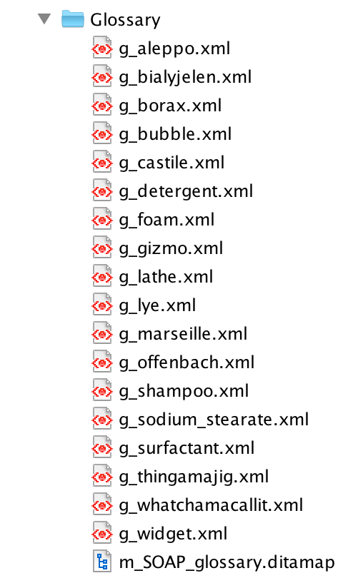

How I learned
to stop worrying
& love the glossary
Our stack:
- DITA OT
- <oXygen/> XML
- easyDITA
+ reveal.js for beautiful HTML slides
Glossaries?
Aleppo soap
Vegetal oil based soap traditionally produced in the city of Aleppo.
Castile soap
Vegetal oil based soap traditionally produced in the Castilian plains.
Marseille soap
Vegetal oil based soap traditionally produced in the Marseille area.

Docs
Glossary
Glossentry (term)
<?xml version="1.0" encoding="UTF-8"?>
<!DOCTYPE glossentry PUBLIC "-//OASIS//DTD DITA Glossary//EN" "glossary.dtd">
<glossentry id="g_soap" xml:lang="en-US">
<glossterm>SOAP! content conference</glossterm>
<glossdef>SOAP! is the best content conference. Period.</glossdef>
<glossBody>
<glossSurfaceForm/>
<glossAlt>
<glossAcronym>SOAP!</glossAcronym>
</glossAlt>
</glossBody>
</glossentry>
Glossary map
<?xml version="1.0" encoding="UTF-8"?>
<!DOCTYPE map PUBLIC "-//OASIS//DTD DITA Map//EN" "map.dtd">
<map>
<title>SOAP glossary</title>
<keydef keys="g_aleppo" type="glossentry" href="g_aleppo.xml"/>
<keydef keys="g_bialyjelen" type="glossentry" href="g_bialyjelen.xml"/>
<keydef keys="g_borax" type="glossentry" href="g_borax.xml"/>
<keydef keys="g_bubble" type="glossentry" href="g_bubble.xml"/>
<keydef keys="g_castile" type="glossentry" href="g_castile.xml"/>
<keydef keys="g_detergent" type="glossentry" href="g_detergent.xml"/>
<keydef keys="g_foam" type="glossentry" href="g_foam.xml"/>
<keydef keys="g_gizmo" type="glossentry" href="g_gizmo.xml"/>
<keydef keys="g_lathe" type="glossentry" href="g_lathe.xml"/>
<keydef keys="g_lye" type="glossentry" href="g_lye.xml"/>
<keydef keys="g_marseille" type="glossentry" href="g_marseille.xml"/>
<keydef keys="g_offenbach" type="glossentry" href="g_offenbach.xml"/>
<keydef keys="g_shampoo" type="glossentry" href="g_shampoo.xml"/>
<keydef keys="g_sodium_stearate" type="glossentry" href="g_sodium_stearate.xml"/>
<keydef keys="g_surfactant" type="glossentry" href="g_surfactant.xml"/>
<keydef keys="g_thingamajig" type="glossentry" href="g_thingamajig.xml"/>
<keydef keys="g_whatchamacallit" type="glossentry" href="g_whatchamacallit.xml"/>
<keydef keys="g_widget" type="glossentry" href="g_widget.xml"/>
</map>
DITA refresher
-
keys: symbolic name that links an element to a file path -
keydef: element used to define the key of an element -
keyref: indirect link based on keys -
conkeyref: indirect transclusion based on keys
<keydef keys="g_aleppo" type="glossentry" href="g_aleppo.xml"/>DITA refresher
-
keys: symbolic name that links an element to a file path -
keydef: element used to define the key of an element -
keyref: indirect link based on keys -
conkeyref: indirect transclusion based on keys
<term keyref="g_aleppo"/>DITA refresher
-
keys: symbolic name that links an element to a file path -
keydef: element used to define the key of an element -
keyref: indirect link based on keys -
conkeyref: indirect transclusion based on keys
<term conkeyref="topic_key/element_id"/>SOAP.dita
├─c_SOAP.xml
├─t_SOAP.xml
└─r_SOAP.xml
<?xml version="1.0" encoding="UTF-8"?>
<!DOCTYPE map PUBLIC "-//OASIS//DTD DITA Map//EN" "map.dtd">
<map>
<title>SOAP example map</title>
<mapref href="Glossary/m_SOAP_glossary.ditamap"/>
<topicref href="c_SOAP.xml"/>
<topicref href="t_SOAP.xml"/>
<topicref href="r_SOAP.xml"/>
</map>
├─
c_SOAP.xml
├─t_SOAP.xml
└─r_SOAP.xml
<?xml version="1.0" encoding="UTF-8"?>
<!DOCTYPE concept PUBLIC "-//OASIS//DTD DITA Concept//EN" "concept.dtd">
<concept id="c_SOAP" xml:lang="en-US">
<title>THING hygiene</title>
<shortdesc>Your THING has very strict hygiene requirements.</shortdesc>
<conbody>
<ul>
<li>You shall never expose your THING under bright light.</p>
<li>You shall regularly cleanse your THING using SOAP.</p>
<li>Never feed your THING after midnight.</p>
</ul>
</conbody>
</concept>
├─c_SOAP.xml
├─
t_SOAP.xml
└─r_SOAP.xml
<?xml version="1.0" encoding="UTF-8"?>
<!DOCTYPE task PUBLIC "-//OASIS//DTD DITA Task//EN" "task.dtd">
<task id="t_SOAP" xml:lang="en-US">
<title>Cleansing a THING</title>
<shortdesc>Use SOAP to properly cleanse your THING.</shortdesc>
<taskbody>
<steps>
<step>
<cmd>Rub the SOAP on the THING</cmd>
</step>
<step>
<cmd>????</cmd>
</step>
<step>
<cmd>PROFIT</cmd>
</step>
</steps>
</taskbody>
</task>
├─c_SOAP.xml
├─t_SOAP.xml
└─
r_SOAP.xml<?xml version="1.0" encoding="UTF-8"?>
<!DOCTYPE reference PUBLIC "-//OASIS//DTD DITA Reference//EN" "reference.dtd">
<reference id="r_SOAP" xml:lang="en-US">
<title>SOAP ingredients</title>
<shortdesc>SOAP is the preferred medium for cleansing a THING and satisfying
its hygienic requirements.</shortdesc>
<refbody>
<section>
<ul>
<li>Water</li>
<li>Olive oil</li>
<li>Palm kernel oil (copra oil)</li>
<li>Vegetable glycerin</li>
</ul>
</section>
</refbody>
</reference>
Introducing:
Interim Glossaries
Doc
intGloss
Gloss
├─c_SOAP.xml
├─t_SOAP.xml
├─r_SOAP.xml
└─
r_IntGloss.xml<?xml version="1.0" encoding="UTF-8"?>
<!DOCTYPE reference PUBLIC "-//OASIS//DTD DITA Reference//EN" "reference.dtd">
<reference id="SOAP_intGloss" xml:lang="en-US">
<title>Reference title</title>
<refbody>
<section><!--SOAP-->
<term id="SOAP">SOAP</term><term conkeyref="IntGloss/SOAP"/>
</section>
<section><!--THING-->
<term id="THING">THING</term><term conkeyref="IntGloss/THING"/>
</section>
</refbody>
</reference>
SOAP.dita
├─c_SOAP.xml
├─t_SOAP.xml
├─r_SOAP.xml
└─r_IntGloss.xml
<?xml version="1.0" encoding="UTF-8"?>
<!DOCTYPE map PUBLIC "-//OASIS//DTD DITA Map//EN" "map.dtd">
<map>
<title>SOAP example map</title>
<mapref href="Glossary/m_SOAP_glossary.ditamap"/>
<topicref href="c_SOAP.xml"/>
<topicref href="t_SOAP.xml"/>
<topicref href="r_SOAP.xml"/>
<topicref href="r_IntGloss.xml" processing-role="resource-only" keys="IntGloss"/>
</map>
├─
c_SOAP.xml
├─t_SOAP.xml
├─r_SOAP.xml
└─r_IntGloss.xml
<?xml version="1.0" encoding="UTF-8"?>
<!DOCTYPE concept PUBLIC "-//OASIS//DTD DITA Concept//EN" "concept.dtd">
<concept id="c_SOAP" xml:lang="en-US">
<title><term conkeyref="IntGloss/THING"/> hygiene</title>
<shortdesc>Your <term conkeyref="IntGloss/THING"/> has very strict
hygiene requirements.</shortdesc>
<conbody>
<ul>
<li>You shall never expose your <term conkeyref="IntGloss/THING"/>
under bright light.</li>
<li>You shall regularly cleanse your <term conkeyref="IntGloss/THING"/>
using <term conkeyref="IntGloss/SOAP"/>.</li>
<li>Never feed your THING after midnight.</li>
</ul>
</conbody>
</concept>
<term id="SOAP">SOAP</term><term id="THING">THING</term>
Cleansing a THING
Use SOAP to clean your THING.
- Rub the SOAP on the THING
- ????
- PROFIT
<task id="t_SOAP" xml:lang="en-US">
<title>Cleansing a <term conkeyref="IntGloss/THING"/></title>
<shortdesc>Use <term conkeyref="IntGloss/SOAP"/> to properly cleanse
your <term conkeyref="IntGloss/THING"/>.</shortdesc>
<taskbody>
<steps>
<step>
<cmd>Rub the <term conkeyref="IntGloss/SOAP"/>
on the <term conkeyref="IntGloss/THING"/></cmd>
</step>
<step>
<cmd>????</cmd>
</step>
<step>
<cmd>PROFIT</cmd>
</step>
</steps>
</taskbody>
</task>
<term id="SOAP">Marseille soap</term><term id="THING">Gizmo</term>
Cleansing a Gizmo
Use Marseille soap to clean your Gizmo.
- Rub the Marseille soap on the Gizmo
- ????
- PROFIT
<task id="t_SOAP" xml:lang="en-US">
<title>Cleansing a <term conkeyref="IntGloss/THING"/></title>
<shortdesc>Use <term conkeyref="IntGloss/SOAP"/> to properly cleanse
your <term conkeyref="IntGloss/THING"/>.</shortdesc>
<taskbody>
<steps>
<step>
<cmd>Rub the <term conkeyref="IntGloss/SOAP"/>
on the <term conkeyref="IntGloss/THING"/></cmd>
</step>
<step>
<cmd>????</cmd>
</step>
<step>
<cmd>PROFIT</cmd>
</step>
</steps>
</taskbody>
</task>
Doc
intGloss
Gloss
Doc
intGloss
Gloss
├┬t_SOAP.xml
│├─c_SOAP.xml
│└─r_SOAP.xml
├┬
t_SHAMPOO.xml
│├─c_SHAMPOO.xml
│└─r_SHAMPOO.xml
├─r_IntGloss.xml
└─m_SOAP_glossary.xml
<task id="t_SHAMPOO" xml:lang="en-US">
<title>Cleansing a <term keyref="g_widget"/></title>
<shortdesc>
Use <term keyref="g_shampoo"/> to properly cleanse your
<term keyref="g_widget"/>.
</shortdesc>
<taskbody>
<steps>
<step>
<cmd>Choose a cleansing method</cmd>
<choices>
<choice>
Rub the <term keyref="g_shampoo"/> on the
<term keyref="g_widget"/>
</choice>
<choice>
Else it gets the hose again
</choice>
</choices>
</step>
</steps>
</taskbody>
</task>
Docs
Glossary
Schematron
ISO Schematron of 2006 (ISO/IEC FDIS 19757-3)- Validation rules
- Quick fixes
Doc
intGloss
Gloss
Doc
intGloss
Gloss
ProTip:
Let XSLT handle the synch
But that's not all!
How about some list automation?
Reuse content
Reuse effort
Reuse ideas
💖Glossary💖
Slides and materials on github